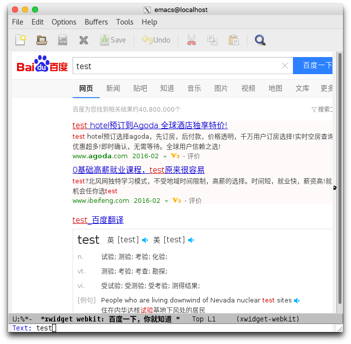
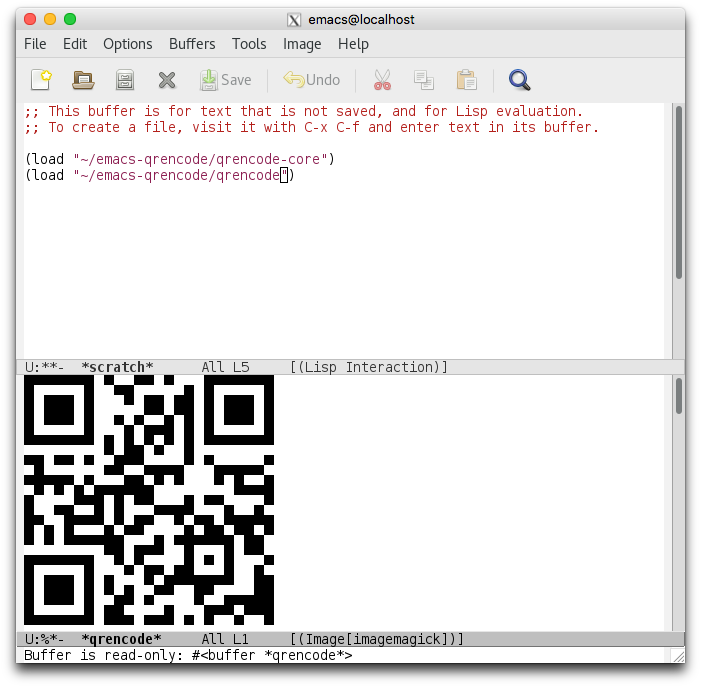

programming¶
Building emacs git version with xwidgets and modules in archlinux
First you need to install these packages:
sudo pacman -S git autoconf automake gtk3 webkitgtk
git clone --depth 1 https://github.com/emacs-mirror/emacs.git (or git protocol if you like)
cd emacs
./autogen.sh all
./configure --with-xwidgets --with-x --with-x-toolkit=gtk3 --with-modules
make
cd lisp
make autoloads
make
make
make
Until you got everything ok.
Then you can just:
cd src
./emacs
And then, M-x webkit-browse-url RET: 
Also, test the modules feature using syohex/emacs-qrencode: 
I'm using ssh and X11 Forward to show Emacs in Mac OS X! Cool!
Good software engineering rules
I saw a great saying:
No code runs faster than no code.
No code has fewer bugs than no code.
No code uses less memory than no code.
No code is easier to understand than no code.
It comes from here.
And i strongly recommends this article for a better understanding of monads.